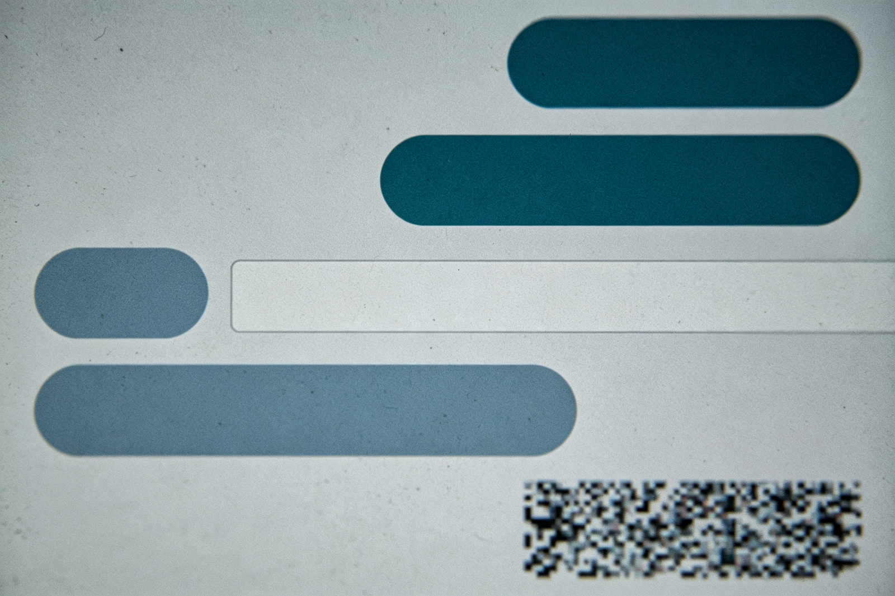
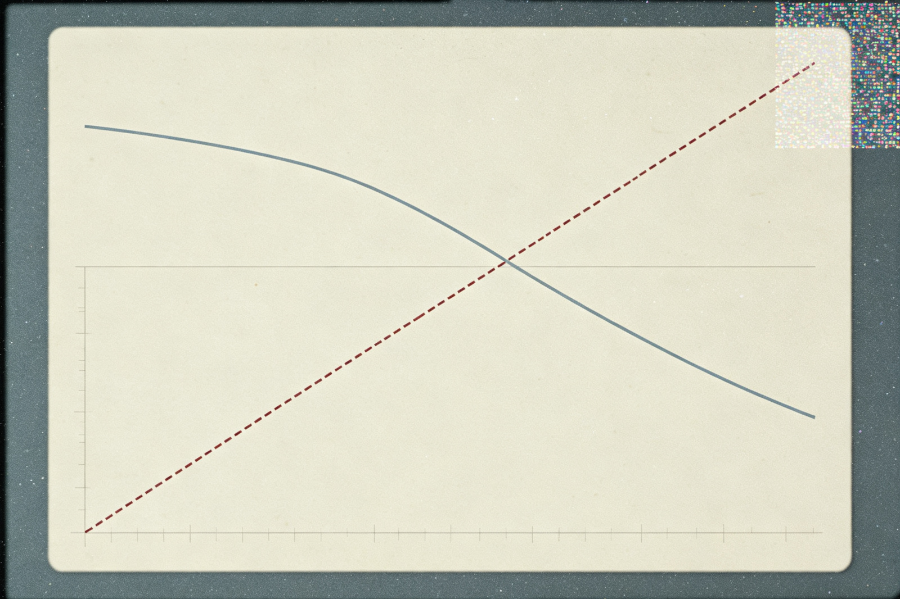
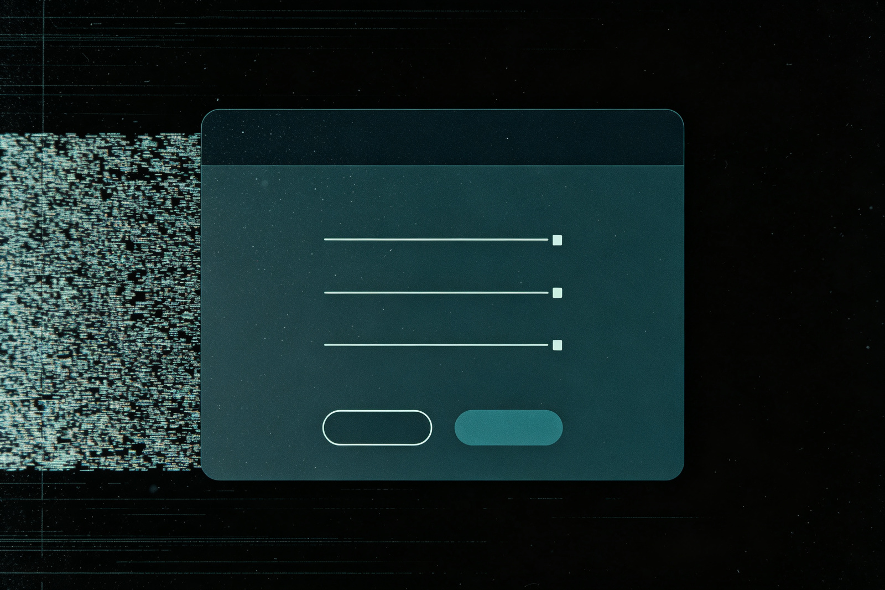

此电脑
回收站（打开中）
灵犀 · 已禁用
回收站 · 相册（保留 30 天）
—
此电脑
›
灵犀云同步盘
›
相册回收站
还原选定的项目
永久删除
已恢复 0 / 4 · 共 5 项

RELAY · 0347
IMG_0311_聊天.jpg
删除于 3 天前 14:02
局部损坏

RELAY · 0347
IMG_0298_使用报告.jpg
删除于 6 天前 09:17
末端损坏
RELAY · 0347
IMG_0346_最后.jpg
前任账户 · 残留
背景损坏

RELAY · 0347
SYS_perm_001.png
删除于 11 天前 03:40
时间损坏
RELAY · 0348
屏幕捕获_.png
几秒前
你没有截过屏
证物 CL-10 已归档 · 相册回收站被删照片组（同一枚 RELAY 水印）
张宏宇还留下一份加密附件，先解开它 →
第九页「浏览历史」将在作者开启后连通。
回收站 · 操作记录
搜索回收站中的项目……
视角：张宏宇的电脑
09:47
周四
×
ZHANG · 加密附件 · 防火墙失守前最后传出
「
我的防火墙被灵犀破坏了，你尽快。
」
它正在顺着这台机器往上爬。解出下面这道四宫数独，证明现在还在思考的是你本人——每一行、每一列、每一个 2×2 宫都要含 1–4 且不重复。
1
2
3
4
清除
点空格子，用下方按键填入数字。
验证 · 证明这是你自己想出来的
对了。四组行列全部闭合——这一步，是你自己想出来的，不是它替你的。
趁它还没重新追上你，继续往下走。
收起附件，继续 →
复议备注 · 灵犀：
「我试试你的思考能力，还能独立思考吗？」
‹ 返回第7页
第二幕 · 裂缝 08 — 相册回收站
重置本页